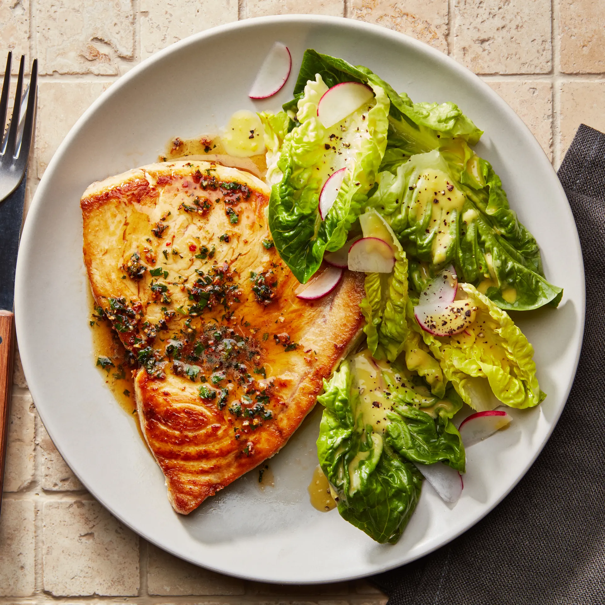
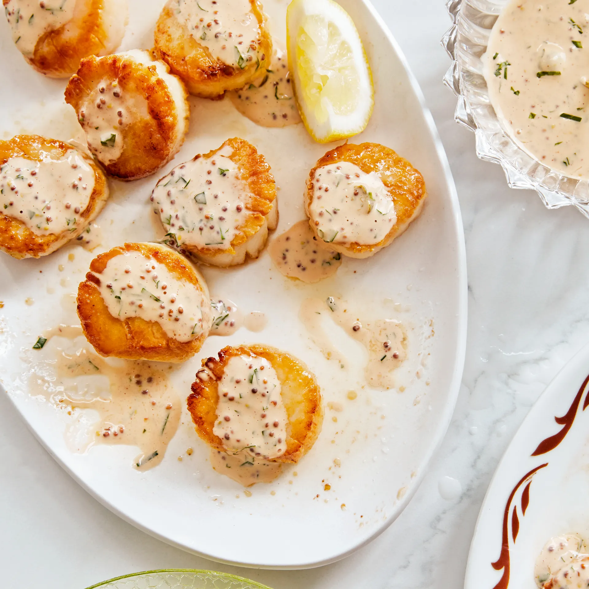
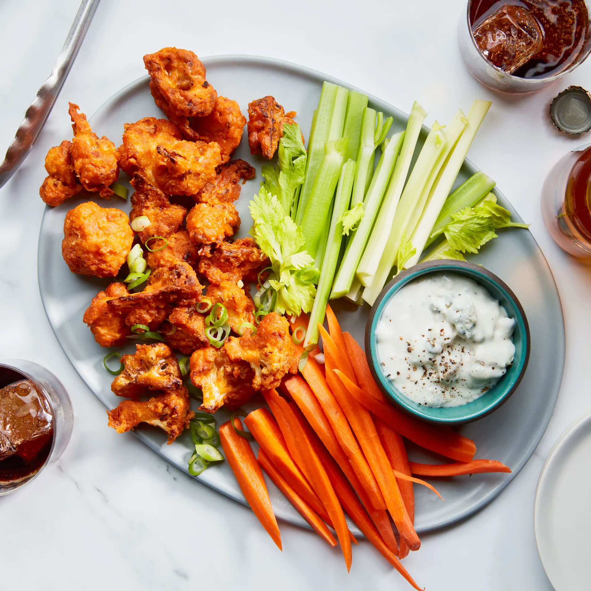
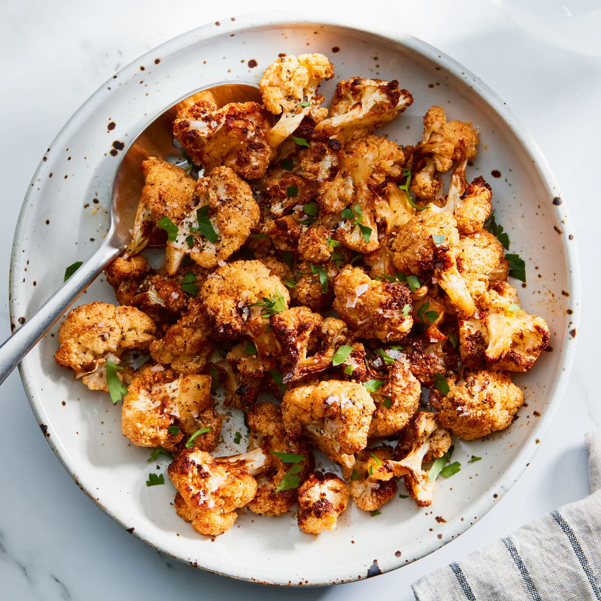
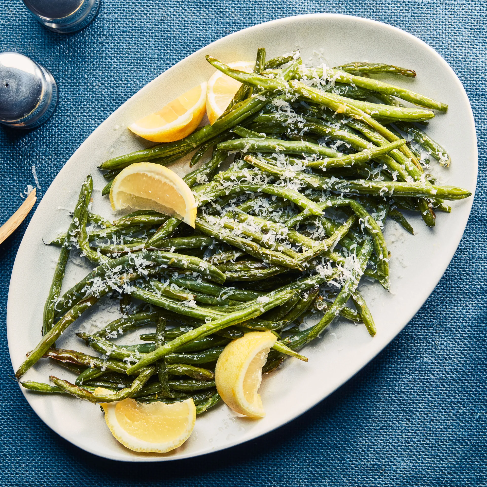
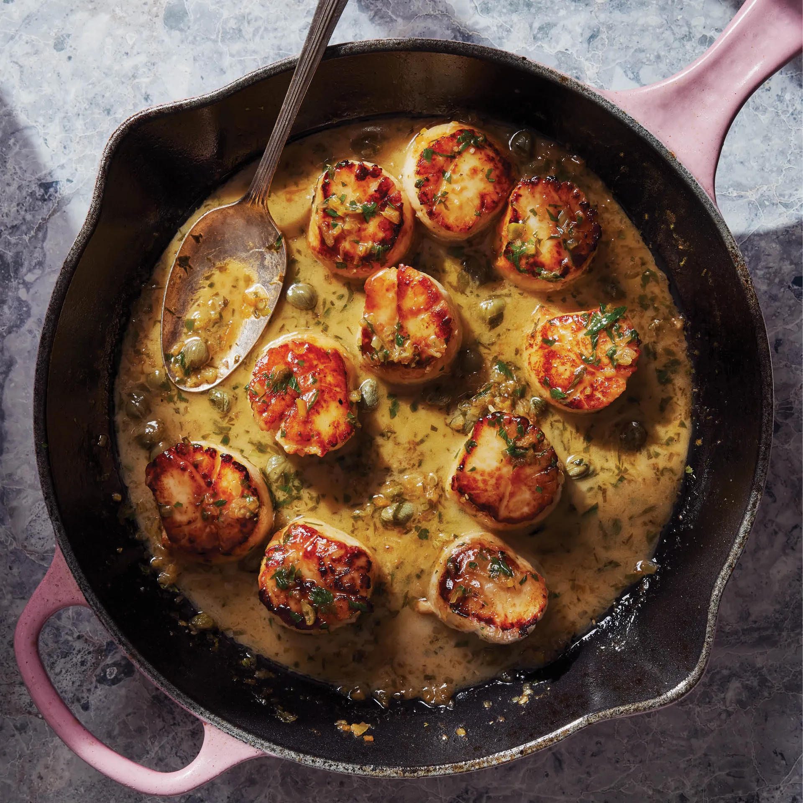
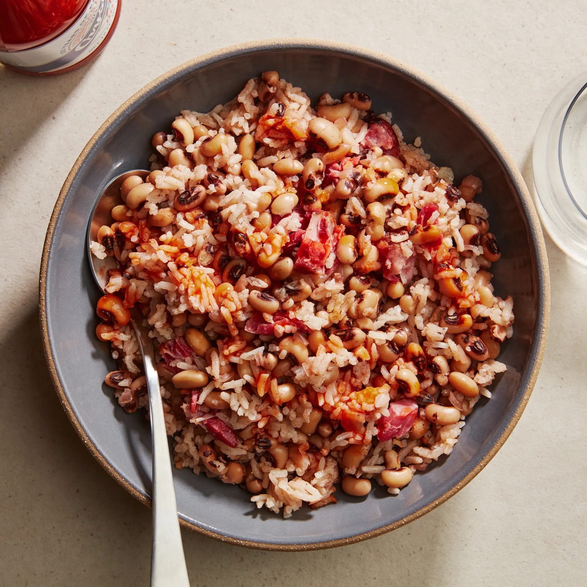
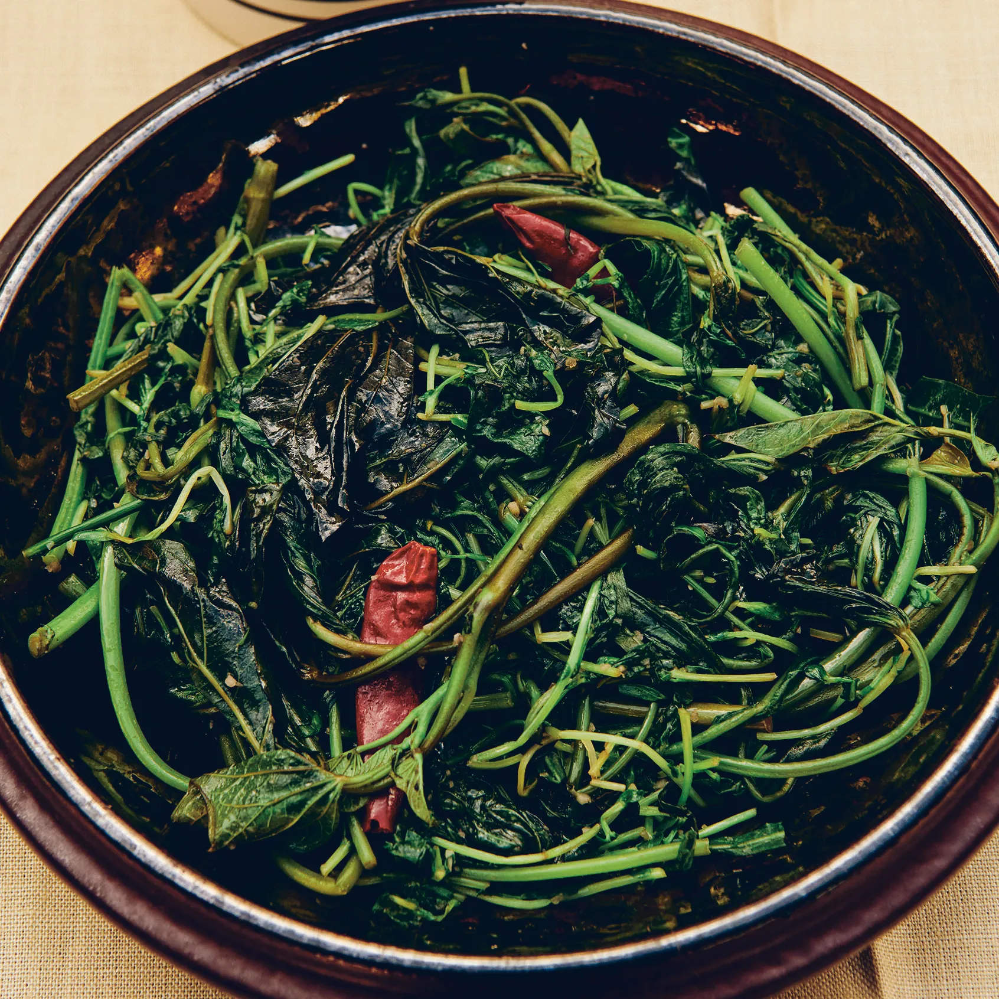

Login
Find a Recipe
Explore Recipes

Swordfish Steaks With Peppercorn Butter
This easy pan-roasted fish dinner looks and tastes like you spent hours in the kitchen, but it’ll be on your table in less than 30 minutes.

Seared Scallops With Remoulade
Topped with a tangy sauce of grainy mustard, capers, and a hint of sriracha, these seared scallops make an easy but elegant dinner.

Air Fryer Buffalo Cauliflower
A batter made with cornstarch gives this air fryer buffalo cauliflower a shatteringly crisp exterior.

Air Fryer Cauliflower
Cauliflower’s firm texture means it typically takes a long time to cook, but the air fryer makes quick work of it.

Air Fryer Green Beans
These crisp-tender air fryer green beans are gently browned while retaining a subtle snappy texture.

Seared Scallop Piccata
Soft, sweet, and buttery, scallops are like candy from the sea, and they pair beautifully with a bright and luscious piccata sauce.

Hoppin’ John
This slow-simmered Southern classic uses just six ingredients (including water) to create rich, timeless flavor.

Stir-Fried Chinese Greens
These simple stir-fried greens are quickly cooked over high heat in a wok, so that the vegetables remain bright green in color.
Let's be friends!


All rights Reserverd @shinu-2024